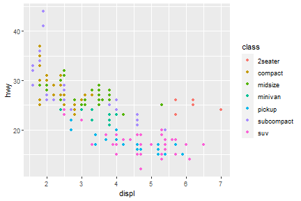
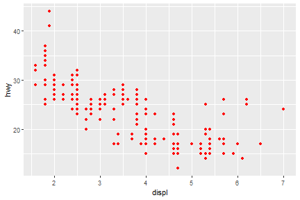
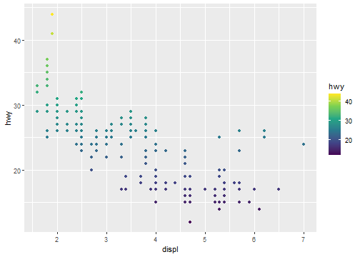
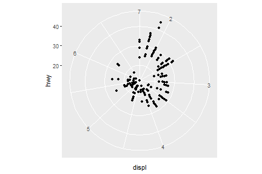
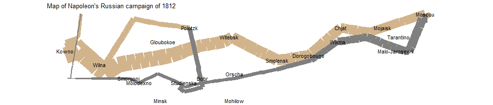

Introduction
Instructor/Author: Zhenyuan Lu
Version: 0.1.0
This is the course notes for IE6600 Computation and Visualization course, which has covered the following semesters:
Description
IE6600 covers basic of the R, and R Shiny for data preprocessing, and visualization. It introduces students to static and interactive visualization, dashboard, and platform that reveal information, patterns, interactions, and comparisons by paying attention to details such as color encoding, a shape selection, spatial layout, and annotation. Based on these fundamentals of analytical and creative thinking, the course then focuses on data visualization techniques and the use of the most current popular software tools that support data exploration, analytics-based storytelling and knowledge discovery, and decision-making in engineering, healthcare operations, manufacturing, and related applications.
Textbooks
Most of the course materials are borrowed from the following books/resources.
- R For Data Science (R4DS), Wickham, Hadley, and Garrett Grolemund
- R For Everyone (R4E), Lander, Jared P.
- R Markdown (RMD), Xie, Yihui, et al.
- Shiny tutorial, R Shiny
R-related Materials
- R Graphics Cookbook (RGC), Chang, Winston.
- Advanced R (ADR), Wickham, Hadley.
- R Packages (RPK), Wickham, Hadley.
- Text Mining with R (TM), Silge, Julia, and David Robinson.
Lectures
| Topic | Slides | Textbook/Materials |
|---|---|---|
| Basic of R | üìë | R4E "Basics of R" |
| üìë | R4E "Advanced Data Structure" | |
| R functions and the grammar of visualization | üìë | R4DS Workflow |
| Wickham A layered grammar of graphics | ||
| (optional) R4E "Writing R functions" | ||
| Basic data visualization in R | üìë | R4DS Data Visualization with ggplot2 |
| (optional) RGC"Quickly Exploring Data" | ||
| Data transformation with dplyr | üìë | R4DS Data Transformation with dplyr |
| Data wrangling with tibbles, readr and tidyr | üìë | R4DS Tibbles with tibble |
| R4DS Data Import with readr | ||
| R4DS Tidy Data with tidyr | ||
| (optional) Data wrangling with stringr, forcats | üìë | (optional) R4DS"Strings with stringr", "Factors with forcats" |
| Visualizing Relational Data | üìë | R4DS Relational Data with dplyr |
| Introduction to Shiny | üìë | R Shiny Shiny tutorial |
| Exploratory data analysis and more data visualization | üìë | R4DS Exploratory Data Analysis |
Disclaimer
I am pretty sure there are some typing errors, spelling mistakes, etc. If you find any, please contact me via lu [dot] zhenyua [at] northeastern [dot] edu.
This work is licensed under a Creative Commons Attribution-ShareAlike 4.0 International License

FAQ in IE6600
The following are the solutions/answers covered most of the questions in the class:
R Markdown Issues
1. Error(s) with installation of tinytex/MikTex
If you have to use MikTex:
You can install the dev version of the R package tinytex:
devtools::install_github('yihui/tinytex')
If you haven't installed MiKTeX, remember to check the option Yes in Install missing packages when installing it:

If you have already installed MiKTeX, go to the Start menu, find the menu "MiKTeX Console", and choose the option Always install missing packages on-the-fly:

If you don’t have to use MiKTeX:
Things will be a little easier. Uninstall MiKTeX if you have installed it (or temporarily rename its installation folder if you don't want to get rid of it completely), then in R:
install.packages('tinytex')
tinytex::install_tinytex()
This will install TinyTeX (a custom version of TeX Live), which can also build LaTeX documents to PDF on Windows (more info, see https://yihui.name/tinytex/). Restart RStudio/R when the installation is done (it may take 3-5 minutes).
Reference: @Yihui, https://github.com/rstudio/rmarkdown/issues/1285#issuecomment-374340175
2. If above doesn't work
If you still have issues with LaTex/tinytex, please download the following tools directly:
- For Mac user: MacTex 2022 - http://tug.org/mactex/
- For Win user: MiKTeX - https://miktex.org/download
3. If you have the pandoc error 137
Error: pandoc document conversion failed with error 137
You may have two alternative ways to deal with it (Recommended the first one):
- Knit your .rmd to .html and then print/save it as .pdf.
- Please check the post: https://stackoverflow.com/questions/51410248/r-markdown-to-html-via-knitr-pandoc-error-137?rq=1
R Language
1. Error in loading packages in Rstudio (See figure)

You have successfully loaded the ggplot2. The issue is on the package of colorspace.
Please do the following:
remove.packages(c("ggplot2", "colorspace"))
install.packages('ggplot2', dependencies = TRUE)
install.packages('colorspace', dependencies = TRUE)
2. When I use the is.character(x) or is.numeric(x) to judge the vector x, it doesn't show all result of elements.
When you assign variables into one vector, then all the elements in the vector will be treated as the same data type. But if you want to check each of the elements' data type, You may want to use the following function: sapply() or lapply()
temp<-c(1,2,"a")
sapply(temp, is.character)
3. What is coercion rule in R?
R follows the coercion rule, which means if a vector contains multiple data types it will convert a logical to a number and number to a character.
4. I can't understand the data type of factor possesses usage in R language. Could you give me some examples?
Try the following in R:
ggplot(mpg)+geom_bar(aes(drv))
ggplot(mpg)+geom_bar(aes(factor(drv, levels=c("r",4, "f"))))
5. Changing size/color by using size=0.1 or color="blue" but this kind of coding will make every point the same,
When syntax size= and color= are inside of aes()which allows you to assign variables to different sizes or colors. When they are outside of aes(), which allows you to assign constant values to size or color, 1, or "blue", etc.  
R with Tableau
- How to connect R to Tableau? please check out the following tutorial on Youtube: https://www.youtube.com/watch?v=iReaNA4D2os&list=PLkqc8xRb_lIDSWEEtX9wJsngZyMPb6np3&index=7
Basic of R


Installation of R
After you click the following link: https://cran.r-project.org/
You will see as the following figure. Click the proper link and start the installation

For Mac User: Make sure you are downloading the correct version, otherwise it will cause errors
Installation of R studio
After you click the following link: https://www.rstudio.com/products/rstudio/download/
You will see as the following figure. Choose the free version, which is totally enough for our class application and practice

Tip: Update R language in Rstudio
For Windows users only:
# install package installr ---- install.pacages("installr") # load package ---- library(installr) # update R ---- updateR()For Mac users:
Go to R project to download the latest R.
Note: make sure to install the correct version of R for your Mac chips.
RStudio Interface
If you have successfully installed the R studio, you will see the same R studio console as the below figure showing after launching on the RStudio. (OS: Windows 10)
In this class, all the practice, homework, and project will be processing on RStudio.

R Packages
A package is essentially a library of prewritten code designed to accomplish some task or a collection of tasks. It is the most powerful tool in the R.
In this class we will be more focused on the package of ggplot2, which is most efficient package for visualization. Though there are still some very robust and well-maintained packages out there, such as dplyr, readr, caret, tibbles, or knitr.
Installation of R Packages
The fastest way to do is typing the following scripts in the Rstudio.
# install package ggplot2 (package name should be a string)
install.packages("ggplot2")
NOTE: the package name is case sensitive, which means Ggplot2 is different from ggplot2
Get Help Document
There are 3 ways to get help document.
-
Press F1 (for laptop may click
Fn+F1, or "Other function key"+F1) and then the help tab will pop up on the right bottom of the RStudio. -
Type
help(install.packages) -
Type
?install.packages
Then you will see:

Un/Loading R Packages
Loading R packages (Two ways)
library(ggplot2)

Or:
require(ggplot2)

require is designed for use inside functions returning FALSE/TRUE.
Unloading R packages:
detach("package:ggplot2")
NOTE 1: We usually ignore the warning message, not all the time.
NOTE 2: You may need to load the packages again if you relaunch RStudio.
NOTE 3: It will automatedly detach all the global packages you loaded after closing Rstudio,
then follow NOTE2...

Packages Needed
You’ll also need to install some R packages. An R package is a collection of functions, data, and documentation that extends the capabilities of base R.
install.packages("tidyverse")
library(tidyverse)

This tells you that tidyverse is loading the ggplot2, tibble, tidyr, readr,
purrr, stringr, forcats, and dplyr packages. These are considered to be the core of the tidyverse
because you’ll use them in almost every analysis.
This also tells you that there are two functions from dplyr having conflicts with stats.
You'll use dplyr:: or stats:: to specific the function from dplyr.
This is a very common issue students may have.
Installation of R Markdown
There are many other excellent packages that are not part of the tidyverse.
# install r markdown from CRAN ----
install.packages("rmarkdown")
# or if you want to test the development version ----
# install from GitHub ----
if (!requireNamespace("devtools"))
install.packages('devtools')
devtools::install_github('rstudio/rmarkdown')
If you want to generate PDF output, you will need to install LaTeX. For R Markdown users who have not installed LaTeX before, we recommend that you install tinyteX.
# install tinyteX ----
install.packages("tinytex")
tinytex::install_tinytex()
If you have any issues with R Markdown, feel free to check: FAQ for the class
References:
[1] Hadley Wickham, Garrett Grolemund. R For Data Science.
[2] Yihui Xie, J. J. Allaire, Garrett Grolemund. R Markdown.
R Functions
Functions
R has a large collection of built-in functions that are called like this:
function_name(arg1 = val1, arg2 = val2, ...)
Let’s try using sum(), which makes regular summary of numbers. Type su and hit Tab. A pop-up shows you possible completions. Specify sum() by typing more (a “m”) to disambiguate, or by using ↑/↓ arrows to select.
sum(1,2)
## [1] 3
How to create function
The default syntax for creating a function as follow:
variable <- function(arg1, arg2,...){
your expression/algorithm
}
Hello, World!
Now is the very cliché stuff...
If we did not include a "Hello, World!" this would not be a serious and sleepy programming class.
hello <- function(){
print("Hello, World!")
}
hello()
## [1] "Hello, World!"
Name masking
You should have no problem predicting the output.
f <- function() {
x <- 1
y <- 2
c(x, y)
}
f()
## [1] 1 2
If a name isn’t defined inside a function, R will look one level up.
x <- 2
g <- function() {
y <- 1
c(x, y)
}
g()
## [1] 2 1
Function inside another function
x <- 1
h <- function() {
y <- 2
i <- function() {
z <- 3
c(x, y, z)
}
i()
}
h()
## [1] 1 2 3
Functios created by other function
j <- function(x) {
y <- 2
function() {
c(x, y)
}
}
k <- j(1)
k()
## [1] 1 2
Functions vs Variables
The same principles apply regardless of the type of associated value — finding functions works exactly the same way as finding variables:
l <- function(x)
x + 1
m <- function() {
l <- function(x)
x * 2
l(10)
}
m()
## [1] 20
If you are using a name in a context where it’s obvious that you want a function (e.g.,f(3)), R will ignore objects that are not functions while it is searching.
n <- function(x)
x / 2
o <- function() {
n <- 10
n(n)
}
o()
## [1] 5
Exercise
What does the following function return? Make a prediction before running the code yourself.
f <- function(x) { f <- function(x) { f <- function(x) { x ^ 2 } f(x) + 1 } f(x) * 2 } f(10)
Answer:
## [1] 202
Every operation is a function call
“To understand computations in R, two slogans are helpful:
- Everything that exists is an object.
- Everything that happens is a function call.”
- John Chambers
Say a + operation between variable x and y, we can do this:
x <- 1
y <- 2
x+y
## [1] 3
Then if we set the + operator into a regular funciton format:
`+`(x,y)
## [1] 3
Another example of for
for (i in 1:2) print(i)
## [1] 1
## [1] 2
Then again for as a regular funciton:
`for`(i, 1:2, print(i))
## [1] 1
## [1] 2
Anonymous functions
Anonymouse functions shows you a side of functions that you might not have known about: you can use functions without giving them a name.
In R, functions are objects. They aren’t automatically bound to a name. Unlike other languages (e.g., Python), R doesn’t have a special syntax for creating a named function.
Generally, you use the regular assignment operator to give it a name when you create a function in R. If you choose not to give the function a name, you get an anonymous function.
The following code chunk does not call the function, but it only return the function itself.
function(x)3()
function(x)3()
You can call an anonymous function without giving it a name. You have to use the parenthesis in two ways: first, to call a function, and second to make it clear that you want to call the anonymous function itself, as opposed to calling a (possibly invalid) function inside the anonymous function:
With appropriate parenthesis, the function is called:
(function(x) 3)()
## [1] 3
Return Values
Functions are generally used for computing some value, so they need a mechanism to supply that value back to the caller.
# first build it without an explicit return
double.num <- function(x) {
x * 2
}
double.num(5)
## [1] 10
# now build it with an explicit return
double.num <- function(x) {
return(x * 2)
}
double.num(5)
## [1] 10
double.num <- function(x) {
x * 3
print("hello")
x * 2
}
double.num(5)
## [1] "hello"
## [1] 10
double.num <- function(x) {
return(x * 2)
print("hello")
return(3)
}
double.num(5)
## [1] 10
Control Statments
Control statements allow us to control the flow of our programming and cause different
things to happen, depending on the values of tests. The main control statements are
if , else, ifelse and switch.
Create one function with if and else
Let's try to create a function to demonstrate if the variable is equal to 1
if.one <- function(x){
if(x==1){
print("True")
}else{
print("False")
}
}
if.one(1)
if.one(2)
## [1] "True"
## [1] "False"
Create one function with ifelse
Let's try to create a function to demonstrate if the variable is equal to 1
if.one <- function(x){
ifelse(x==1, "TRUE","FALSE")
}
if.one(1)
if.one(2)
## [1] "TRUE"
## [1] "FALSE"
Create one function with switch
If we have multiple cases to check, writing else if repeatedly can be cumbersome and inefficient. This is where switch is most useful.
multipleCases <- function(x){
switch(x,
a="first",
b="second",
z="last",
c="third",
d="other")
}
multipleCases("a")
Special argument ...
There is a special argument called ... . This argument will match any arguments not otherwise matched, and can be easily passed on to other functions.
Example 1
f <- function(a,b,c) {
data.frame(a,b,c)
}
f(a = 1, b = 2, c = 3)
## a b c
## 1 1 2 3
Example 2
f <- function(...) {
data.frame(...)
}
f(a = 1, b = 2, c = 3, d = 5, e = 7)
## a b c d e
## 1 1 2 3 5 7
Tips
Try press Alt-Shift-K to see the shortcuts in R Studio.
for Loops
The most commonly used loop is the for loop.
for(i in 1:3){
print(i)
}
## [1] 1
## [1] 2
## [1] 3
Let's build up a automatic for loop to count the number of letters for fruit names.
# build a vector holding fruit names
fruit <- c("apple", "banana", "pomegranate")
# make a variable to hold their lengths, with all NA to start
fruitLength <- rep(NA, length(fruit))
fruitLength
## [1] NA NA NA
# give it names
names(fruitLength) <- fruit
fruitLength
## apple banana pomegranate
## NA NA NA
for (i in fruit){
fruitLength[i] <- nchar(i)
}
fruitLength
## apple banana pomegranate
## 5 6 11
Apply Family
Built into R is the apply function and all of its common relatives such as lapply, sapply and mapply. Each has its quirks and necessities and is best used in different situations.
apply
theMatrix <- matrix(1:9, nrow=3)
# sum the rows
apply(theMatrix, 1, sum)
## [1] 12 15 18
# sum the columns
apply(theMatrix, 2, sum)
## [1] 6 15 24
Notice that this could alternatively be accomplished using the built-in rowSums and colSums functions, yielding the same results.
Sum up the row values.
rowSums(theMatrix)
## [1] 12 15 18
Sum up the column values.
colSums(theMatrix)
## [1] 6 15 24
lapply and sapply
Basic grammar:
lapply(x, FUN, ...)
sapply(x, FUN, ...)
lapply
lapply works by applying a function to each element of a list and returning the results as a list.

Hadley Wickham, Advanced R
lapply works by applying a function to each element of a list and returning the results as a list.
theList <- list(A=1:3, B=1:5, C=-1:1, D=2)
lapply(theList, sum)
## $A
## [1] 6
##
## $B
## [1] 15
##
## $C
## [1] 0
##
## $D
## [1] 2
sapply
sapply is a user-friendly version and wrapper of lapply by default returning a vector.
theList <- list(A=1:3, B=1:5, C=-1:1, D=2)
sapply(theList, sum)
## A B C D
## 6 15 0 2
mapply
Perhaps the most-overlooked-when-so-useful member of the apply family is mapply, which applies a function to each element of multiple lists.
firstList <-
list(A = matrix(1:16, 4),
B = matrix(1:16, 2),
C = data.frame(1:5))
secondList <-
list(A = matrix(1:16, 4),
B = matrix(1:16, 8),
C = data.frame(15:1))
# test element-by-element if they are identical
mapply(identical, firstList, secondList)
## A B C
## TRUE FALSE FALSE
Lets create one small function with mapply:
simpleFunc <- function(x, y) {
nrow(x) + nrow(y)
}
mapply(simpleFunc, firstList, secondList)
## A B C
## 8 10 20
References:
[1] Hadley Wickham, Advanced R
[2] Hadley Wickham, Garrett Grolemund. R For Data Science.
[3] Yihui Xie, J. J. Allaire, Garrett Grolemund. R Markdown.
[4] Jared P. Lander, Writing R functions. (NEU library)
The Grammar of Graphics
Common plots
Common statistical plots:
- Bar chart
- Scatter plot
- Line chart
- Box plot
- Histogram
The followings are the general rules for common plots, but theses can always be changed:
Scatter plot
- continuous varialbe vs continuous variable
Line plot
- continuous varialbe vs continuous variable
Box plot
- categorical varialbe vs continuous variable
Histogram
- continuous variable vs continuous variable
Bar chart
- categorical varialbe vs continuous variable
What make a basic plot

The components for a basic plot.
Let's draw a scatterplot of A vs C.

Wickham, Hadley. A Layered Grammar of Graphics.
Then Mapping A to x-position, C to y-position, and D to shape

Wickham, Hadley. A Layered Grammar of Graphics.
Here we have three basic layers:
- Geometric objects
- Scales
- Coordinate system (From left to right)

Three basic layers. Wickham.
Then we have one:

Wickham 2010
Of course, we can also create a plot by faceting:

Wickham 2010
Components of the plots
- Layers:
- Dataset
- Aesthetic mapping (color, shape, size, etc.)
- Statistical transformation
- Geometric object (line, bar, dots, etc.)
- Position adjustment
- Scale (optional)
- Coordinate system
- Faceting (optional)
- Defaults
ggplot2 full syntax
ggplot2 full syntax actually is following up the above layered grammar.
ggplot(data = <DATASET>,
mapping = aes( <MAPPINGS>) +
layer(geom = <GEOM>,
stat = <STAT>,
position = <POSITION>) +
<SCALE_FUNCTION>() +
<COORDINATE_FUNCTION>() +
<FACET_FUNCTION>()
Previous example
Let's get back to the previous example.
df <- data.frame(
A = c(2, 1, 4, 9),
B = c(3, 2, 5, 10),
C = c(4, 1, 15, 80),
D = c("a", "a", "b", "b")
)
df
## A B C D
## 1 2 3 4 a
## 2 1 2 1 a
## 3 4 5 15 b
## 4 9 10 80 b
Questions?
- What kind of layers?
- Dataset?
- Aesthetic mapping?
- Statistical transformation?
- Geometric object?
- Position adjustment?
- Scale?
- Coordinate system?
- Faceting?
Let's make a simple ggplot2 plot based on the previous example.
ggplot(data = df,
mapping = aes(x = A, y = C, shape = D)) +
layer(geom = "point",
stat = "identity",
position = "identity") +
scale_x_continuous() +
scale_y_continuous() +
coord_cartesian() +
facet_null()

I know it's a little off from the previous example. We will cover how to adjust the background, dot size, font, etc. in the rest of the semester.
Previous example.
Facetting with grid
ggplot(data = df,
mapping = aes(x = A, y = C, shape = D)) +
layer(geom = "point",
stat = "identity",
position = "identity") +
scale_x_continuous() +
scale_y_continuous() +
coord_cartesian() +
facet_grid( ~ D)

Facetting with grid.
Previous example.
A typical ggplot2
In general, we don't use full syntax of ggplot2 for our daily work.
We commonly use the following:
ggplot(data = <DATASET> ,
mapping = aes(<MAPPINGS)) +
<GEOM_FUNCTION>()
With geom_ function
ggplot(data = df, mapping = aes(x = A, y = C, shape = D)) +
geom_point()+
facet_grid( ~ D)
Dataset - Fuel economy in cars
library(tidyverse)
head(mpg,5)
## # A tibble: 5 x 11
## manufacturer model displ year cyl trans drv cty hwy fl class
## <chr> <chr> <dbl> <int> <int> <chr> <chr> <int> <int> <chr> <chr>
## 1 audi a4 1.8 1999 4 auto(l5) f 18 29 p compa~
## 2 audi a4 1.8 1999 4 manual(m5) f 21 29 p compa~
## 3 audi a4 2 2008 4 manual(m6) f 20 31 p compa~
## 4 audi a4 2 2008 4 auto(av) f 21 30 p compa~
## 5 audi a4 2.8 1999 6 auto(l5) f 16 26 p compa~
Dataset - Interviewing data
mpg[,c("displ","hwy")]
## # A tibble: 234 x 2
## displ hwy
## <dbl> <int>
## 1 1.8 29
## 2 1.8 29
## 3 2 31
## 4 2 30
## 5 2.8 26
## 6 2.8 26
## 7 3.1 27
## 8 1.8 26
## 9 1.8 25
## 10 2 28
## # ... with 224 more rows
Dataset - Creating base
ggplot(data = mpg)

Dataset - Creating plot
ggplot(data = mpg) +
geom_point(mapping = aes(x = displ, y = hwy))

Exercise
- How many rows are in mtcars? How many columns?
- What does the drv variable describe? Read the help for ?mpg to find out.
- Make a scatterplot of hwy versus cyl.
Aesthetic mappings
We can change levels of size, shape, color, fill, alpha etc. inside of aes()
ggplot(data = mpg) +
geom_point(mapping = aes(x = displ, y = hwy, color = class))

Well, if you prefer British English, you can use colour instead of color. In package of tidyverse, you may see couple of function/arguments works for either British/US English.
Aesthetic mappings - outside of aes()
You can also set the aesthetic properties of your geom manually.
ggplot(data = mpg) +
geom_point(mapping = aes(x = displ, y = hwy), color = "red")

Here, the color doesn’t convey information about a variable, but only changes the appearance of the plot.
Some rules for changing the color/size/shape.
-
The name of a color as a character string
-
The size of a point in mm
-
The shape of a point as a number
25 built-in shapes identified by numbers

geom_() functions
- Geometric object
- Statistical transformation
- Position adjustment
Common geom functions with geometric objects
-
geom_bar, bar chart
-
geom_histogram, histogram
-
geom_point, scatterplot
-
geom_qq, quantile-quantile plot
-
geom_boxplot, boxplot
-
geom_line, line chart
Statistical transformation

Wickham 2010.
Common geom with statistical transformation
Typically, you will create layers using a geom_ function.
- geom_bar, bar chart
- stat="count"
- geom_histogram, histogram
- stat="bin"
- geom_point, scatterplot
- stat="identity"
- geom_qq, quantile-quantile plot
- stat="qq"
- geom_boxplot, boxplot
- stat="boxplot"
- geom_line, line chart
- stat="identity"
The defaults stat and position of geom_
Check the documentation
?geom_line
Check the function
geom_line
## function (mapping = NULL, data = NULL, stat = "identity", position = "identity",
## na.rm = FALSE, orientation = NA, show.legend = NA, inherit.aes = TRUE,
## ...)
## {
## layer(data = data, mapping = mapping, stat = stat, geom = GeomLine,
## position = position, show.legend = show.legend, inherit.aes = inherit.aes,
## params = list(na.rm = na.rm, orientation = orientation,
## ...))
## }
## <bytecode: 0x000000001281e898>
## <environment: namespace:ggplot2>
Set of rules
- Use
geom_ functionto make variables visible on the screen. - Use
stat_ functionand define geom shape as an argument insidegeom_. - Or use
geom_and define statistical transformation as an argument inside stat_.
Common geom with position adjustments
point: geom_point, geom_jitter
Scale syntax
scale_<name>_<prepacked scale>()
Several common scale functions:
labs() xlab() ylab() ggtitle()
lims() xlim() ylim()
scale_colour_brewer()
scale_colour_continuous()
Scale example
ggplot(data = mpg) +
geom_point(mapping = aes(x = displ, y = hwy, color=hwy))+
scale_colour_continuous(type="viridis")

Coordinate system
ggplot(data = mpg) +
geom_point(mapping = aes(x = displ, y = hwy))+
coord_polar()

Faceting
facet_grid
ggplot(data = mpg) +
geom_point(mapping = aes(x = displ, y = hwy))+
facet_grid(.~year)

facet_wrap
ggplot(data = mpg) +
geom_point(mapping = aes(x = displ, y = hwy))+
facet_wrap(.~cyl)

A more complicated-embedded grammar

The map of Napoleon's Russian campaign
Charles Joseph Minard is best known for his cartographic depiction of numerical data on a map of Napoleon's disastrous losses suffered during the Russian campaign of 1812 (in French, Carte figurative des pertes successives en hommes de l'Armée Française dans la campagne de Russie 1812–1813). The illustration depicts Napoleon's army departing the Polish-Russian border. A thick band illustrates the size of his army at specific geographic points during their advance and retreat. It displays six types of data in two dimensions: the number of Napoleon's troops; the distance traveled; temperature; latitude and longitude; direction of travel; and location relative to specific dates without making mention of Napoleon; Minard's interest lay with the travails and sacrifices of the soldiers. This type of band graph for illustration of flows was later called a Sankey diagram, although Matthew Henry Phineas Riall Sankey used this visualisation 30 years later and only for thematic energy flow. - Wiki
Let's reproduce the top part of Minard’s famous depiction of Napoleon’s march on Russia.
This graphic can be thought of as a compound graphic:
- The top part displays the number of troops during the advance and the retreat
- The bottom part shows the temperature during the advance
We will focus on the top part of the graphic. This part displays two datasets: cities and troops. Each city has a position (a latitude and longitude) and a name, and each troop observation has a position, a direction (advance or retreat), and number of survivors.
Load data: minard-troops.txt and minard-cities.txt
Supplemental files for "A layered grammar of graphics"
- minard-cities.txt: Location of cities in Napoleon's march by Minard.
- minard-troops.txt: Troop movement data.
troops <- read.table("minard-troops.txt", header=T)
cities <- read.table("minard-cities.txt", header=T)
troops
head(troops)
## long lat survivors direction group
## 1 24.0 54.9 340000 A 1
## 2 24.5 55.0 340000 A 1
## 3 25.5 54.5 340000 A 1
## 4 26.0 54.7 320000 A 1
## 5 27.0 54.8 300000 A 1
## 6 28.0 54.9 280000 A 1
cities
head(cities)
## long lat city
## 1 24.0 55.0 Kowno
## 2 25.3 54.7 Wilna
## 3 26.4 54.4 Smorgoni
## 4 26.8 54.3 Moiodexno
## 5 27.7 55.2 Gloubokoe
## 6 27.6 53.9 Minsk
How would we create this graphic with the layered grammar?
- Start with the essence of the graphic: a path plot of the troops data, mapping direction to color and number of survivors to size.
- Then take the position of the cities as an additional layer
- Then polish the plot by carefully tweaking the default scales
Start with the essence of the graphic: a path plot of the troops data, mapping direction to color and number of survivors to size.
plot_troops <- ggplot(troops, aes(long, lat)) +
geom_path(aes(size = survivors, colour = direction, group = group))
plot_troops

Then take the position of the cities as an additional layer.
plot_both <- plot_troops +
geom_text(aes(label = city), size = 4, data = cities)
plot_both

Then polish the plot by carefully tweaking the default scales.
plot_polished <- plot_both +
scale_size(
range = c(0, 12),
# breaks = c(10000, 20000, 30000),
# labels = c("10,000", "20,000", "30,000")
) +
scale_color_manual(values = c("tan", "grey50")) +
coord_map() +
labs(title = "Map of Napoleon's Russian campaign of 1812") +
theme_void() +
theme(legend.position = "none")
plot_polished

I admitted that there is still huge room to improve this plot, but it gives us some taste of how to use R to mimic this classical visualization created hundred years ago by Minard.
References
[1] Hadley Wickham, Garrett Grolemund. R For Data Science.
[2] Hadley Wickham, A layered grammar of graphics
[3] ggplot2 references